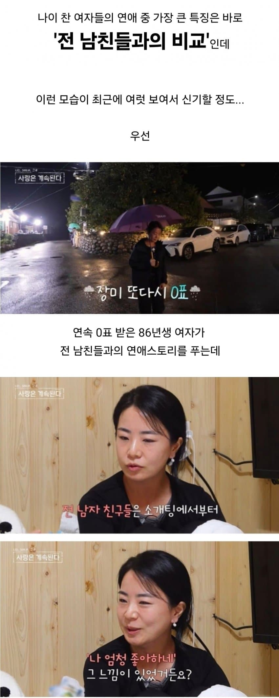
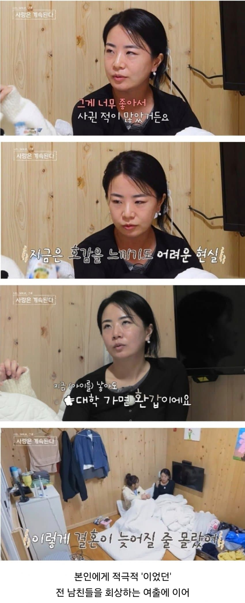
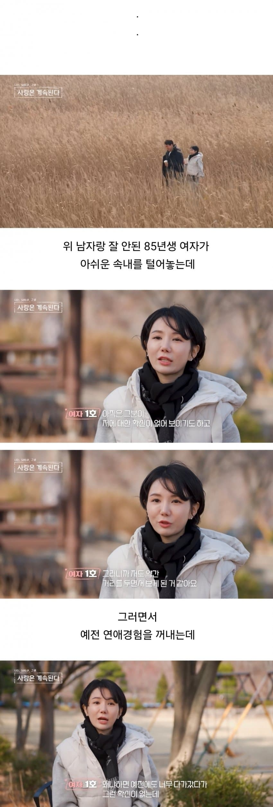
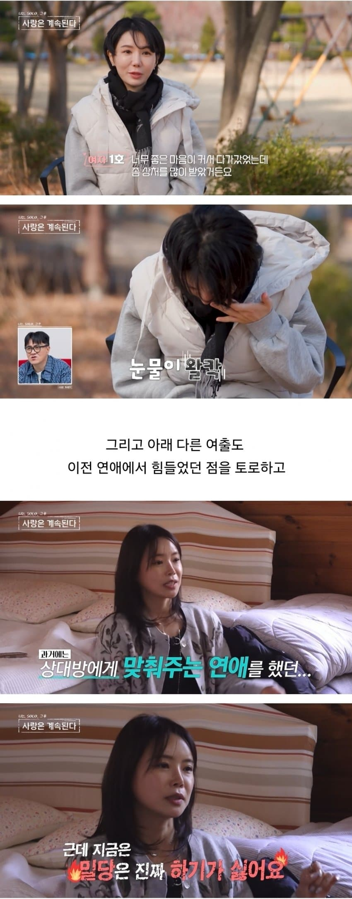
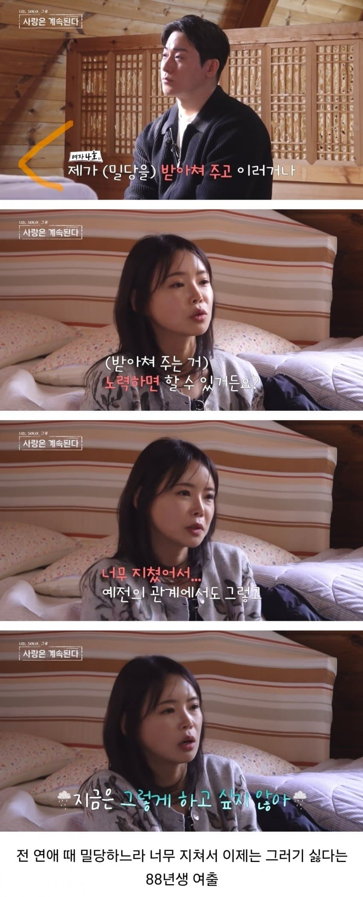
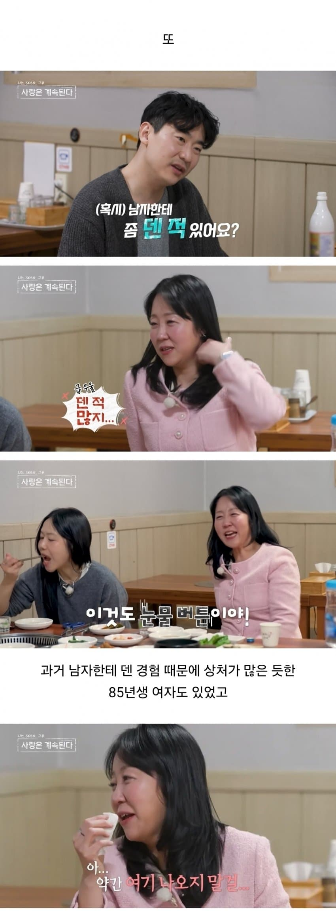
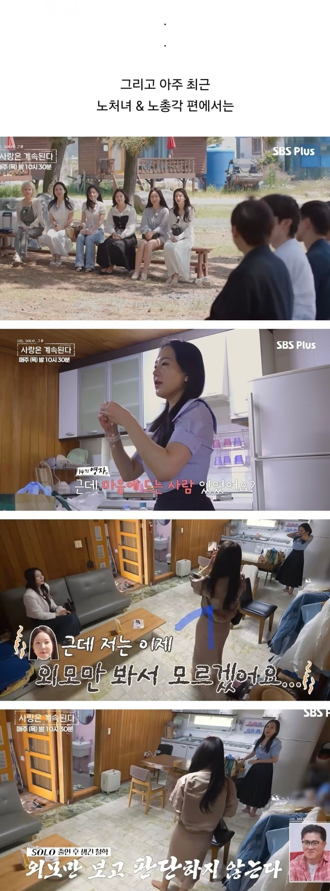
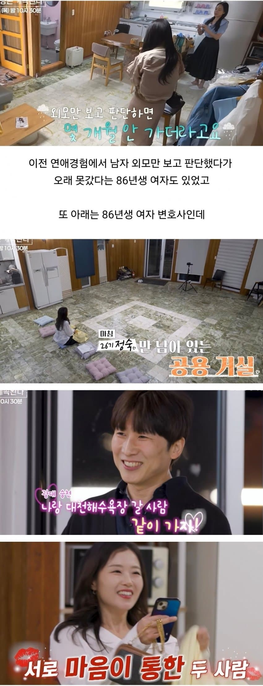
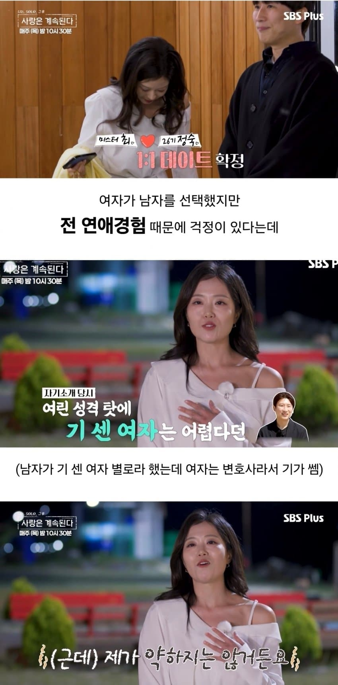
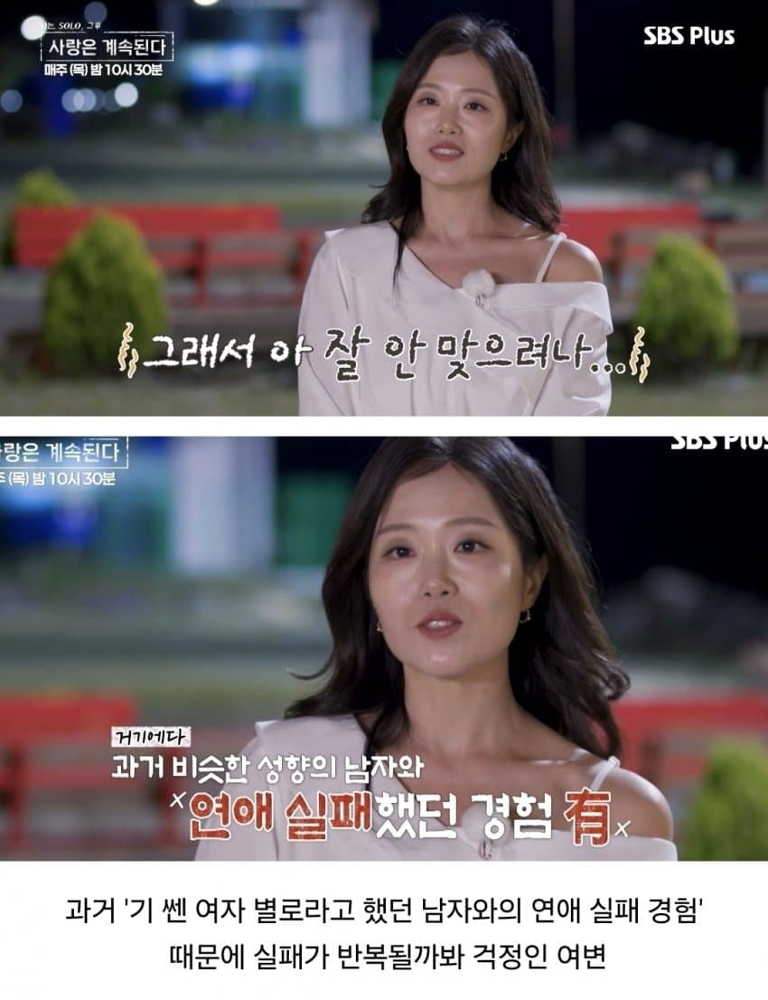
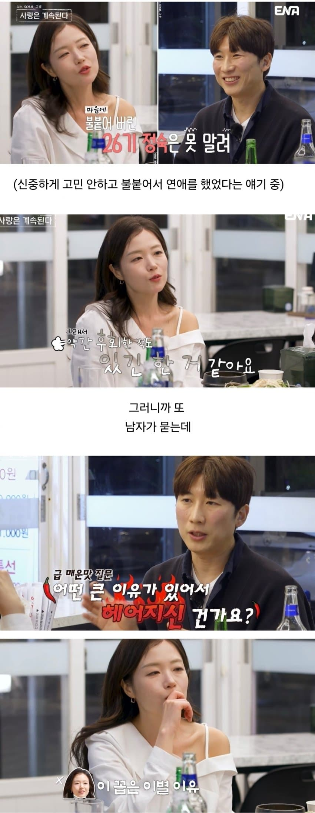
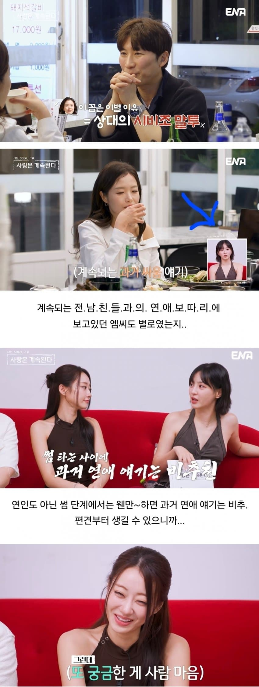
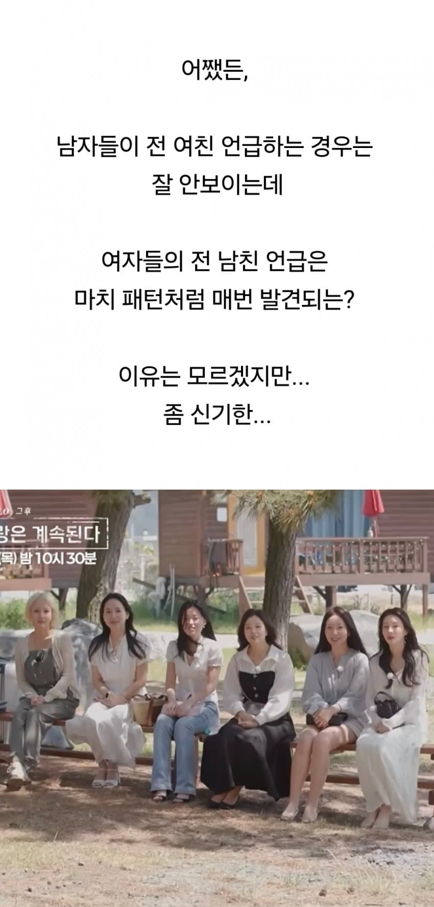
비교가 기본 패시브













비교가 기본 패시브
댓글
수집 당시 댓글 43개
거유 · 1 일 전
근데 저프로에서 내숭떨며 아닌척 하는것보단 걍 잇는그대로 나타내서 나솔이 그나마 인기잇는거아님? 남녀가릴거없이 과거랑 비교는 다하지
키옄 · 12 시간 전
글치 저런 솔직한 징징의 모습보는게 재미지 지금 개드립이렇게 씹고뜯고 하는거처럼
그롬 · 1 일 전
자기객관화 안돼서 혼자 늙어 죽는건 개인문제 이지만 숫자가 너무 많아지니까 요즘은 사회문제같음 저나이대 여자들 보던게 보르노드라마 신데렐라스토리 이런거에 절여져서 미디어가 현실감각을 죽여버림
산나 · 1 일 전
근데 저거 여자만 저런것처럼 편집 해놨는데 다른 기수들 보면 남자도 꽤 저러긴 해 볼때마다 성별 떠나 왜 굳이 카메라 앞에서 과거 연인들 언급하나 싶긴 하던데
IFJFNEUW · 1 일 전
입 밖으로 꺼내면 비교 혼자 생각하면 경험
거란의척후병 · 1 일 전
다 이유가 있다
익사한넙치 · 1 일 전
진짜 다 아줌마들이네
진라면숭한맛 · 1 일 전
여러분들은 마트 폐점 시간이 다가올수록 신선식품 가격이 올라가는 기적을 보고계십니다
인터넷 · 1 일 전
NMNSe · 1 일 전
미쳤냐고 ㅋㅋㅋㅋㅋㅋ
영화자주봄 · 20 시간 전
ㅋㅋㅋ
연골어류 · 18 시간 전
헤이헤이헤이!!!!!!!!!!!!!!!!
RESCENE · 17 시간 전
잘 모르시나 본데 여자는 와인이야 나이 먹을수록 빛나^^
질문 · 1 일 전
그냥 혼자 살면 안되는거임?
니꼬추짤림 · 1 일 전
왜 솔로아줌마인지 알거 같네
두봉 · 1 일 전
7080세대들 중에 공주병 말기 환자 비율이 엄청나게 많음..
바람의동경 · 1 일 전
여자로 느껴질수가 있다는게 신기할뿐
도로보 · 1 일 전
과거 얘기는 아예 꺼내지를 말아야
결국결국결국 · 1 일 전
오늘 갈라치기 정훈교육날이야?
자본주의 · 1 일 전
ㅋㅋ그런듯
옷걸이수집가 · 23 시간 전
주말에 집구석에서 다른사이트글 퍼나르는 애들이 어떤애들이겟어 감수해야지
울산돌고래김낙영 · 1 일 전
포켓몬 지우마냥 지 기억 딜리트버튼 갈기고 연애시작해야하냐 ㅋㅋㅋㅋ
장인물 · 1 일 전
이해가 안되는데 과거의 경험과 상처떄문에 다시 도전하기 힘든건 누구나 마찬가지 아니냐? 이걸 꼭 노처녀니 뭐니 성별갈라치기로 가야함?
찰리푸스 · 23 시간 전
갈라치기 좋아하고 여자라면 일단 씹고보는 병신들이라 그럼 지들이 혐오하는 여시와 놀랍게도 비슷한 새끼들
드릴 · 21 시간 전
과거의 상처는 과거인데 지금 상대에게 대입하는게 맞는거같냐
돈킹콘 · 23 시간 전
나이들면 연애뿐만 아니라 인간관계에서도 습득한 데이터를 보는건 어쩔수 없음 인간본능의 방어기재임
왕가슴 · 23 시간 전
여자는 그래서 처녀이고 어릴수록 좋다..
카메라냐캐머라냐 · 23 시간 전
전남친 중첩론
OM · 23 시간 전
근데 저게 그냥 인간 본성이라 어쩔 수 없다 실패에서 원인을 찾고 성공하기 위해 발버둥치는 과정인데 그게 젊을 때 성공하지 못해서 더 부각되는 거지 남자라고 다를게 있나 아ㅅㅂ 전여친은 안이랬는데 다 그러지
일하기싫어요 · 22 시간 전
음... 내 전여친들이 생각나네...
번마 · 22 시간 전
80년생이면 딱 김지영세대인데.. 아직 결혼못한 25%인가보네
보유개드립콘 · 22 시간 전
당연히 과거의 연애로부터 개선점을 찾고 만났던 상대들와 비교할수도 있는데 다만 자기객관화가 같이 이뤄지지않고 더 나은 사람 나타나기만을 원하니 그게 문제지
수평선 · 21 시간 전
서로 좋은 사람 만나라.
이럴럴로럴 · 21 시간 전
결혼 못하는 이유가 있는거지 뭐
두둠칫둠ㅅ · 21 시간 전
남자도 똑같지 뭐 나도 개좆같은 여자한테 데이고 그런 사람 기피하게됨
띨띠리 · 19 시간 전
전남친중첩이론
바라시타 · 18 시간 전
과거의 경험이 현재를 만드는거니까 이해는 감.
연골어류 · 18 시간 전
남자는 데이지도 않고 슬퍼하지도 않고 아주 무적이구나...
크래프트블랙 · 16 시간 전
나는 이런글 볼때마다 30대 초에 결혼한 내가 참 다행임 30대 중반 넘어가면 나도 저런 사람들이랑 소개팅 해야되는거 아님? 저번주에도 와이프랑 카페 갔는데 30대 중반? 되는 분들이 소개팅 하는데.. 결혼 참 잘했다 싶더라
오리손바닥 · 5 시간 전
마지막이 겁나 웃겼는데.. 저기 여출이 자기 기쎄다고 하는데 누가 댓글로 넌 기가 쎈게 아니라 눈치가 없는거라고..ㅋㅋ
흙흙흙 · 5 시간 전
당연히 과거 경험 바탕으로 판단하는게 인간인거 아니야??? ㅂㅅ같은 글이네
익명
혹시 전남친중첩론을 아시나요? ㅋ
수리수리마수리남 · 32 분 전
소비기한은 지났고 유통기한만 남은 제품을 할인도 안하면 팔릴까요??